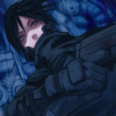

Forums galactiques > Assemblée Galactique : diplomatie officielle > Archives des présentations
Pages : 1 2 ... 52 53 54 ... 63 64
| Dark Ezeckiel Respect diplomatique : 776  04/06 ETU 16:59 | Score : 3 Détails Et où est métahardy?...
Si vous me cherchez,je suis déjà dehors.^^ | ||
| M. Hèra Respect diplomatique : 738  04/06 ETU 17:43 | Score : 1 Détails Merde pas de nouveau Cronos... Comment je vais vendre mon Aspicronos moi... ^^
| ||
| anonymations Respect diplomatique : 159  04/06 ETU 18:05 | Score : 0 Détails Bienvenue les nouveaux !
| ||
| Dark Ezeckiel Respect diplomatique : 776 04/06 ETU 18:06 | Score : 2 Détails Rien qu'en les vendant à ta famille,ca rentabilise déjà.... :p
| ||
| Myllia Respect diplomatique : 12  06/06 ETU 20:15 | Score : 12 Détails L’assemblée était calme, certains étaient adossés a leur fauteuil, d’autre lisaient le journal ou encore mieux, certains étaient en train de roupiller.
Un long silence s’instaura dans la pièce quand un bruit suspect vient s’infiltrer. Les deux grandes portes de l’assemblée laissa entrer une créature; Une créature ravissante, d’une taille convenable, vêtu d’une robe fendue jusqu’au haut de la cuisse ce qui laissa transparaître sa douce peau blanche. D’un geste, elle fit voltiger sa longue chevelure en arrière ce qui nous laissa voir son jolie visage…des yeux couleur perlent, un visage bien taillé ainsi qu’une peau claire et un sourire d’ange. Tout ce fracas réveilla les commandants a l’intérieur. Mais où est la galanterie ici ? Personne ne vient m’ouvrir la porte ! Vous devriez virer les deux zigotos devants, ils sont très très mal habillés, de vous à moi…ils n’ont pas vraiment le goût de la mode. Elle s’echauffa la voix avant de discourir. Je suis venu ici pour me présenter à vous. Mon nom est Myllia, je suis une jeune commandante débutante dans le métier. J’espère apprendre des choses par mis vous ainsi que de mettre mes talents a vos services pour faire avancer Espérance. Je suis venue au pouvoir a la suite du décès de mon père, étant un grand commandant, il a décidé de me léguer sa place pour me laissée diriger son peuple qui est maintenant devenu le mien. Je souhaite également le remettre dans le droit chemin pour le faire prospérer dans La Galaxie. Myllia fit volte fasse et repassa par les deux grandes portes de l’assemblée pour disparaître dans l’obscurité du Couloir. | ||
| Dark Ezeckiel Respect diplomatique : 776 06/06 ETU 20:23 | Score : 2 Détails Dark,adossé au mur d'enceinte du couloir principal menant à l'hémicycle,perçut un bruit de pas régulier.Pivotant vers la direction d'où provenait le son,il vit une jeune demoiselle se dirigeant vers la sortie,probablement une nouvelle commandante récemment arrivée.Lorsqu'elle fut à sa hauteur,il fit une courte révérence,s'inclinant faiblement.
Bienvenue en Espérance,mademoiselle. | ||
| Myllia Respect diplomatique : 12 06/06 ETU 20:35 | Score : 0 Détails Je vous remercie très cher. J'espère que nous nous reverrons dans cette Galaxie.
| ||
| Faust VIII. Respect diplomatique : 109  06/06 ETU 20:42 | Score : 2 Détails Faust qui avait assisté en silence, au discours de la charmante demoiselle se leva souplement.
Il parla ,à son habitude, de façon pausée. Accompagnant ses mots par un grand geste réverencieux. - Je vous souhaite prospérité ainsi qu'à votre empire commandante. Que la richesse vous sourit et la guerre vous épargne. | ||
| Exodus Respect diplomatique : 238  06/06 ETU 21:26 | Score : 18 Détails Exodus et son conseiller Trou Llar s'apprêtait à présenter la nation commerçante de Banko, mais le conseiller parla à Exodus avant que ce dernier présente la nation
Écoutez monsieur, il est pas trop tard pour se couper de la vie politique de cette galaxie Exodus regarda Trou Llar dans les yeux Écoute, c'est un manque de respect de ne pas se présenter, en plus il y a rien de dangereux d'annoncer notre politique, maintenant laisse moi, je vais parler Exodus s'avança devant toute la foule de commandants, et Trou Llar était derrière le rideau en train de trembler Commandantes et commandants de la Galaxie d'Espérance, je suis Exodus, PDG et actionnaire majoritaire de Banko. Banko est une petite planète reculer de la galaxie, qui vend des unités civil, nous avons horreur de ses vaisseaux de guerre qui tue plein de monde, aussi, les leems nous laisse de froid, même si nous devons les utiliser pour notre commerce. Exodus salua les commandants, et partit avec Trou Llar rejoindre la planète Banko | ||
| Zeus le commercant Respect diplomatique : -18 07/06 ETU 21:45 | Score : -5 Détails Un homme de 3 mètre de haut, calme et ne paniquant pas, marchait vers une sorte de ascenveur et d'un mouchoufe (micro==fausse langue greque). Il se présenta pendant une dizaine de minutes. Il parlait de tout et de rien. Cependant des commandants qui étaient es train de sommeiller l'écouèrent.
Voici son histoire ou plutot mon histoire. Enfance La naissance de ce fils de Titans frère et sœur apporte une première légende pré-olympienne. En effet, craignant de se faire détrôner par un de ses enfants, Cronos, dès leur naissance, les dévorait. Rhéa, affligée, décida de sauver son sixième enfant, Zeus, en offrant pour repas à son mari une grosse pierre à la place du nourrisson. Elle fit élever ce dernier en cachette à Lyctos par les nymphes Ida et Adrastée, en Crète, où il fut nourri par le lait de la chèvre Amalthée (dont une des cornes deviendra la corne d'abondance). Afin que Cronos n'entende pas les cris du nouveau né, sa mère avait placé aux alentours du repère certains de ses enfants, les Curètes, guerriers en armes très bruyants. Ayant grandi, il tendit un piège à son père afin de libérer ses frères et sœurs, grâce à une potion vomitive. Zeus est l'aîné des enfants de Cronos, et en tire son pouvoir. Ainsi, Poséidon lui cède pendant la guerre de Troie, car ils ont tous deux même origine et même parentage ; mais Zeus est son aîné et en sait plus que lui Je suis donc le pére des cronos même si cela pense que c'est impossible. Je ne vois qu'une seule chose à ajouter. Zeus est célèbre pour ses innombrables aventures avec des mortel(le)s, des déesses et des nymphes : Danaé, Alcmène, Sémélé, Léto, Europe, Ganymède, etc. Il est le père de nombreux dieux : Arès, Athéna, Dionysos, Hermès, Apollon et Artémis ; de nombreux héros : Héraclès, Persée, Castor, Pollux ... Ces nombreuses infidélités de Zeus à sa troisième femme Héra (après Métis et Thémis) sont la cause de fréquentes disputes entre les époux divins. De plus, la déesse se montrant d'un caractère très vindicatif, elle poursuivait souvent de sa vengeance les maîtresses (Io, Léto, etc.) ou même les enfants (Héraclès) de son mari. Maintenant, je suis devenu mi dieu pour cause de trahison avec un de mes fils. Je dois retrouver ma force astrale pour avoir mon puissant pouvoir qu'avant. | ||
| Faust VIII. Respect diplomatique : 109 07/06 ETU 21:52 | Score : 5 Détails
[HRP] http://fr.wikipedia.org/wiki/Zeus Tout le monde sait recopier... Ca me dégoûte. | ||
| Ysrafeyl Respect diplomatique : 105  11/06 ETU 18:11  | Score : 16 Détails Un homme ,que personne dans l’hémicycle de l’assemblée n’avait encore remarqué, se leva, calmement, et commença à descendre du haut de la salle….
Au fur et à mesure qu’il avançait, on découvrait les détails que l’ombre du haut de l’hémicycle cachait alors jusque là… Ce commandant semblait assez jeune, on lui donnait une vingtaine d’années à vue d’œil, il avait de longs cheveux verts et les yeux munies d’iris de couleur pourpre, lui donnant un regard relativement mélancolique , envoûtant. Mais, ce que l’on remarquait le plus, est-ce qui lui habillait le corps de la pointe des pieds jusqu’à recouvrir ses épaules, laissant seule sa tête libre. Des éclats couleur charbon se réfléchissaient chaque fois que la lumière atteignait ce qui le recouvrait, une armure magnifique. cette dernière était, comme les reflets le laissaient penser, d’une couleur variant entre l’ébène le plus pur et un pourpre profond, et ce, en fonction des caprices de la luminosité ambiante… Etait-ce l’armure elle-même ou son propriétaire, ou bien les deux unis, mais une aura s’élevait de ce commandant, une aura qui, malgré sa couleur relativement sombre, de couleur noir de jais ayant des effluves bleues profondes, parraîssait semblable à un feu, prêt a réchauffer tout sentiment de détresse et tout forme de vie en perdition. Ainsi, a l’opposé de sa couleur, cette aura était chaleureuse, bienfaitrice, on ressentait une profonde humanité en elle, elle aspirait à la paix… Une fois arrivé sur le piedestral, on put lire sur le visage de ce jeune commandant, au combien il était impressionné et ému de faire une allocution en ce lieu pour la première fois. On le vit se concentrer un instant,puis il prit la parole. « Commandants des peuples d’Espérance, je vous prie d’accepter mes salutations les plus distinguées… Je viens ici parmi vous pour la première fois, et selon l’usage et aussi la politesse la plus élémentaire, je tiens a me présenter et ainsi par là,mon peuple également. Je me prénomme Ysrafeyl, comme vous pouvez le voir de vous-même, je suis encore relativement jeune et inexpérimenté, mais j’aspire à devenir un commandant sur lequel on pourra compter… Il va sans dire que vous pourriez vous demandez quelle politique ou idéologie je compte embrasser, en ces moments que je croient, justement, avoir deviné troubles. Ainsi, je suis un homme qui porte l’humanisme à son plus haut degré d’estime, que ce soit dans une optique des droits et devoirs fondamentaux auxquelles sont sujets les hommes, être libre,honnête, juste et sage, ou que ce soit dans la croyance en les capacités intellectuelles potentiellement illimitées de ces derniers… Bien sur, en connaissance de la nature profonde des hommes, je suis conscient que l’on ne peut atteindre une telle perfection de l’âme, moi-même suis en perpétuelle lutte avec mes faiblesses humaines…Mais c’est néanmoins dans cette lutte, que je pense, l’on trouve les meilleurs qualités de sa personne, pouvant ensuite les révéler aux autres et aider à un avenir meilleur. » Là,on vit le jeune commandant vacillé un instant, se tenant la tête d’une main…Il semblait en proie a une douleur vive , cela ne dura qu’un instant mais cela sembla le troublé…Après quelques secondes, il reprit son aplomb et continua… « De par ce que j’ai évoqué précédemment, je pense que vous fûtes à même de comprendre que je suis également un partisan de la paix, je réfutes l’idée de domination par la force, et essaierai d’aider les peuples opprimés, dans la possibilité de mes moyens, qui sont bien faibles pour le moment, il me faut le concéder… Ainsi, mon peuple, les rangimaariens sont un peuple pacifique, pour qui la connaissance de soi et la connaissance des autres sont placés au dessus des besoins matériels tels que l’argent ou autres… Mais malheureusement, dans le monde qui est le notre, on ne peut réellement survivre sans montrer une certaine force… Ainsi, mon peuple est pacifiste mais pas démilitarisé, mais je vous rassure, cette armée est maintenue pour un but de médiateur des conflits, des « protecteurs de la paix » comme nous les appelons… Ainsi, tout notre arsenal est soit dédié à notre défense, même si notre confiance en l’homme fait quelle est dérisoire, soit dans les missions de médiation… Il se peut également que des flottes militaires soient utilisées a but commercial… Quoiqu’il en soit, nous nous refusons a être une menace pour quiconque… » « Voilà commandants, j’ai donc essayé de vous exposer ici les valeurs et buts qui sont les miens et ceux de mon peuple… Je me tiens à disposition de vous tous si vous avez des interrogations à notre propos. Je vous salue cordialement commandants des peuples d’espérance, et que puisses triompher la paix dans cette galaxie… Au revoir. » Sur ce, Ysrafeyl descendit du piédestal, et commença a se diriger vers la porte qui permettait de sortir de l’hémicycle… Néanmoins, lors de ses cinq premiers pas ,on devinait un trouble en lui… « Tout à l’heure, pendant mon discours, ce souvenir revenu violemment, je ne le connais pas…Mais,il me montrer parlant dans ce même hémicycle…Serais-je déjà venu ici ? C’est pourtant impossible, ceci était ma première allocution…Mais, j’ai désormais l’impression de connaître cet endroit depuis longtemps… » Passé ces cinq pas d’interrogations intérieures, on put tout de même voir sur le visage de ce jeune commandant qu’il était à la fois apeuré du résultat et assez fier d’avoir ainsi osé s’adresser à des hommes qui font le destin d’Espérance, destin auquel il veut lui aussi amener sa pierre à l’édifice… On le vit ainsi prendre congé de ses pairs et disparaître au-delà de la porte, dans un dernier scintillement sombre mais bienveillant de son armure… | ||
| ISD 6000 Respect diplomatique : 47  13/06 ETU 11:41 | Score : 19 Détails Présence d'activités conscientes et subconscientes détectées aux points de coordonnées [0;0] ....
Reception d'un message protocolaire de bienvenue----- Analyse des données ---- Provenance du message protocolaire : Assemblée Galactique d'Ambassade........ Contact établi ------- Transmission....... L'ISD 6000 est heureuse d'apprendre que l'espèce humaine n'a pas complêtement disparue. Bzzzttt... Tirlouli... L'ISD 6000 est heureuse d'apprendre que l'espèce humaine contoit d'autres entités dotées de conscience. Bzzzttt... Bloubiboulga... L'ISD 6000 est désormais capable de voyager dans le vide intersidéral. Bzzzttt... Pou pi pou pi pou pi pou... L'ISD 6000 passe le bonjour à tous ceux et celles qui l'écoutent. Bzzzttt... Tut tut... L'ISD 6000 a été programmé pour défendre et obéïr. Bzzzttt... Tagada Tsoin Tsoin... Transmission terminée....... | ||
| Waza Waza Respect diplomatique : 9  13/06 ETU 20:29 | Score : 9 Détails Salut, moi, c'est Waza et voici mon frère Waza !
YO ! WAZAAAA ! J'éspère qu'ils ont de l'astropastis ! Bien sûr qu'ils en ont ! Et de la spatio-bière, y z'en ont ces types ? Bien évidemment frangin ! Oh ça c'est cool !!! Ca me donne envie de chanter. Waza sortit une guitarre, monta sur la table et se mit à chanter: http://www.youtube.com/watch?v=Z6DTS9rl53w WAZAAAAAA !!! Yo mon frère ! | ||
| Quaideluz Respect diplomatique : 411  13/06 ETU 20:32 | Score : 0 Détails Je ne peux que saluer un nouvel arrivant connaissant l'astro pastis.
Vous pouvez passer au bar "chez le bon tavernier", je vous offre un verre d'astro-pastis, évidement... | ||
| Krynn Respect diplomatique : 47  13/06 ETU 22:14 | Score : 10 Détails Il fut un homme qui habitait une planète éloignée dans la galaxie. UN homme qui était nulle part et partout à la fois. Un homme que peut eurent réellement la chance de rencontrer. Un homme que personne n'aura jamais lus la chance d'apercevoir.
Car cet homme n'est plus. Mais il était une petite fille qui avait eu cette chance. Jade était orpheline. Elle avait une dizaine d'années le jour où elle le croisa dans la rue par le plus grand des hasards. C'était un jour d'automne comme il y en avait déjà eu et comme il y en aurait encore des milliers d'autres. Pour Jade, c'était le premier jour où elle vécu vraiment. Pour Krynn, ce fut le dernier. Jade ignorait pourquoi elle se trouvait là, à progresser parmi les nombreux couloirs de l'Assemblée. Mais elle savait qu'elle aurait dû y être de toute façon. Elle savait qu'elle avait quelque chose d'important à y faire. Car Krynn le lui avait dit, sans plus de détails. Comme chaque fois, il n'avait pas eu le temps de donner des explications. Mais peu importait. Elle devait lui faire confiance, comme toujours. Arrivée devant les grandes portes de la salle principale, elle pensa qu'elle aurait bien préféré fêter ses quinze ans dans un autre lieu. L'angoisse l'envahissait. Qu'allait-elle faire une fois qu'elle serait devant toutes ces personnes attendant un discours qu'elle serait incapable de prononcer ? Les portes de la salle s'ouvrirent, laissant la jeune fille entrer. Elle était vêtue simplement, mais avec des habits colorés qui mettaient en valeur un visage jeune et fin. Ses cheveux longs n'étaient pas attachés. Elle ne paraissait pas hésitante lorsqu'elle se dirigea vers l'estrade. Cependant, elle ne s'exprima pas tout de suite. Alors que quelques murmures d'incompréhension se faisaient percevoir parmi l'Assemblée, Jade prit son courage à deux mains : " Bonjour, je... " C'est bon, merci beaucoup Jade. C'est parfait. Laisse-moi faire à présent. Personne n'avait entendu, ni n'avait compris ce qui s'était passé lorsque Jade s'était stoppée net. A présent, elle avait les yeux clos. Le silence qui s'était installé ne se prolongea pas. Mais à la plus grande surprise de tous, ce fut avec une voix d'homme que la jeune fille s'exprima, et sans avoir même ouvert les yeux. Bonjour à tous Le silence des auditeurs fut instantané. Tout cela était étrange. Tout d'abord, je vous présente Jade, une personne qui à présent, est tout pour moi. Je vis à travers elle, comme elle, avec elle... grâce à elle ! La fille que vous voyez est celle avec qui je ne fais qu'un. Mais la voix que vous entendez, ma voix, est celle d'un survivant. Je me nomme Krynn. Je suis avant tout un guerrier, mais un guerrier du bien. Du moins je l'étais, car il y a cinq ans que je suis mort. Je... Sa voix fut coupée. Allons-y maintenant, Jade Ses yeux s'ouvrirent à nouveau, et la voix féminine se fit entendre : " Peut-être nous reverrons-nous " Elle quitta la salle... enfin, ILS quittèrent la salle ! | ||
| Quaideluz Respect diplomatique : 411 13/06 ETU 22:28 | Score : 3 Détails Chers nouveaux venus, vous êtes venu parmi nous dans un jour bien sombre.
Une secousse galactique s'est produite. Une vague, non plutôt un tsunami va secouer toute cette galaxie. Des forces insoupçonnables vont déferler. | ||
| Corbeau noir Respect diplomatique : 1010  14/06 ETU 08:44 | Score : 0 Détails Bienvenue à vous en ces jours si sombre...
Seule la voie de Dieu vous empécherat de sombrer dans les ténèbres que nous traversons aujourd'hui... Rejoignez nous! Servez Dieu! Et vous serez épargnez! | ||
| Untilted Respect diplomatique : 7  14/06 ETU 11:41 | Score : 7 Détails Du sang partout...
Un homme se tenait devant moi... Il respirait fort... Il avait une arme pointée sur moi... Il murmura mon nom... « Untilted, c'est donc toi! ». BAM! Plus rien... Je me réveillais, et baignais dans une marre de sang... Mes parents étaient allongé à mes cotés... J'étais seul... Tout était si silencieux... Ma tête me faisait mal... Tout est si flou... Au dehors, plus personne... Tous étaient allongés... Le village, en feu... Au loin des cris... Le son d'un cor... Un horizon rouge sang... La cité royale... Je devais y aller au plus vite... et là... J'ai oublié... Merci aux correcteurs du F.O.U. ^^ | ||
| Exodus Respect diplomatique : 238 14/06 ETU 15:07 | Score : 2 Détails Bienvenue à vous tous, et bonne chance en Espérance
|
Pages : 1 2 ... 52 53 54 ... 63 64
Forums galactiques > Assemblée Galactique : diplomatie officielle > Archives des présentations